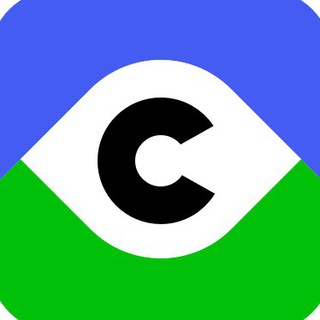

[스테이블, 모르포 기반 PYUSD 대출 볼트 출시]

세 줄로 읽기
블록체인 인프라 기업 스테이블(Stable)이 탈중앙화 대출 프로토콜 모르포(Morpho)를 기반으로 페이팔의 달러 스테이블코인 PYUSD 전용 대출 볼트(Vault)를 출시했다.
이번 신규 볼트는 가상자산 금융기업 갤럭시가 리스크 관리 및 전략 큐레이션을 담당한다.
이에 따라 PYUSD 보유자들은 스테이블체인 네트워크 내 온체인 대출 시장에 유동성을 예치하고 운용 수익을 창출할 수 있게 됐다.
원문 문장에서 고른 요약입니다. 숫자와 사실은 원문에서 다시 확인하세요.
핵심 포인트
- 1대출 차입자는 출시 초기 유일한 담보 자산으로 채택된 이더파이( ether.fi )의 유동성 리스테이킹 토큰(LRT) 'weETH'를 예치하고 PYUSD를 빌릴 수 있다.
이 블로거의 최근 글
- [월드리버티파이낸셜, 바이낸스 WLFI 선물 자동 청산 관여 부인]
- [스카이, 일일 SKY 스테이킹 보상 117만개로 상향…5개 유형 볼트 신규 대출 차단]
- [BNB체인, 우리은행·BPN과 스테이블코인 결제 시범사업 추진]
- [자오창펑 "이더리움 없었다면 암호화폐 생태계 훨씬 작았을 것"]
- [코인베이스 BTC 프리미엄 지수 66일 연속 음수]
같은 분류의 다른 글
- 영란은행 지폐 유통액, 5주 새 15억파운드 증가
- 비트코인(BTC) 공포지수 9, ETF 순유출액 집계마다 달라
- Bitcoin not delivering: The bear market has digital asset veteran questioning BTC's value
- 러시아, 금 보유 10개월째 감소…테더 관련 금은 소폭 증가
- 미국장이 닫힌 사이 · 11월 28일
공개 페이지에는 짧은 소개와 원문 링크만 있습니다. 원문 전문은 올리지 않습니다.